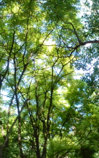

ife.baidu.com
About
Forest
A forest is a large area of land covered with trees
700
3.2 css cscscscscscs
What
森林，是一个高密度树木的区域（或历史上，森林是一个为狩猎而留出的荒地），涵盖大约9.4％的地球表面（或30％的占总土地面积[1]）。森林覆盖着全球面积的9.4%，全球陆地面积的30%（在工业化前约占全球面积的15.6%，全球陆地面积的50%），森林对二氧化碳下降、动物群落、调节水文湍流和巩固土壤起着重要作用，是地球生物圈中最重要的生境之一。
Where
只要可以让树木生长的区域，就可能有森林，包括海拔高到林木线的地区，但若该地区的自然大火太过频繁，或是环境常受到其他天然或人为的影响，就可能不会有没有森林。南北纬10°之间的赤道多半是热带雨林，而北纬53度到67度之间的区域是北方针叶林。一般而言，森林主要是由开花植物（阔叶植物）为主，较少以裸子植物（针叶植物）为主，不过也有例外。
How
吸收大量的人为二氧化碳排放
是巨大的碳蓄积库
森林--------
9.4%
陆地--------
29%
海洋--------
71%
面朝大海 春暖花开
- 前端前端前端前端前端.........................前端
- 前端前端前端前端............................前端前
- 前端前端前端前端前端前端.....................前端
THREE FOUR FIVE
hello world hello world
hello world
THE TECHNOLOGE OF FRONT
前端技术领域
科学的研究森林物种及物种与环境相互的影响被称为森林生态，而森林管理往往是被称为林业。然而，在过去数百年来森林被过度采伐，令地球上不少物种因此而绝种或濒临绝种。许多环保组织提出森林管理需要很大的修改，在两千多年前孟子便曾说过：“斧斤以时入山林，材木不可胜用也。”一语道破森林永续经营的重要性，而目前以可持续为前提的森林管理方法称为可持续森林管理。可持续森林管理重点放在同时保护一体化的生态、社会和经济价值三大方面，往往管理员需要在当地咨询社区人士和其他利益相关者。
加拿大大约有4,020,000平方公里的森林土地。90%以上的森林土地是公有和公营，约50％的森林总面积是分配给林业。这些分配领域的管理，使用可持续森林管理原则，其中包括广泛的咨询，与当地的利益相关者。约8％，加拿大的森林，是受法律保护，从资源开发（全球森林观赏加拿大，加拿大自然资源部）。2006年12月，超过123.7万平方公里在加拿大的森林土地（约半数的全球总），已证明作为可持续管理（加拿大可持续林业认证联盟）。
森林生态系统对全球碳循环有着重大意义。首先，陆地生态系统通过植物的生长可吸收大量的人为二氧化碳排放，而森林又是主要的碳吸存贡献者。其次，森林生态系统是巨大的碳蓄积库，拥有储蓄大于大气中碳蓄积两倍的能力。